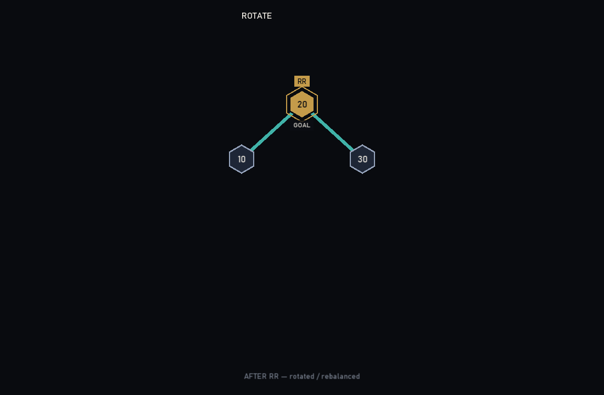
| Arslan | 25I-3101 |
|---|---|
| Anas | 25I-3062 |
| Stack | C++17, CMake, SFML 3.0 |
| Date | November 2026 |
Vault Heist is a single-player GUI puzzle game in which the vault map is a tree
(and, in the finale, a Max Heap). Every comparison or visit raises an alarm meter,
so tree height and balance are felt as pressure rather than only calculated on paper.
We implemented BinaryTree, BST, AVLTree and MaxHeap from scratch with custom
DynArray, Stack and Queue containers
(no STL containers or algorithms in the core model). The model emits an
EventLog; the GUI replays it through an AnimationController,
keeping data structures unit-testable and independent of SFML. The campaign covers
four acts (binary tree, BST, AVL, heap / Heap Sort), plus Endless mode, Sandbox,
save/load and a local leaderboard. This report summarises architecture, algorithmic
complexity, testing, the four AVL rotations with before/after screenshots, Act 4
heap demos, GUI captures, and Section 10 benchmarks regenerated with our
bench executable.
The brief requires a playable game that teaches tree and heap operations by using them: traversals and reconstruction, BST search/insert/delete/range, AVL rebalancing and order statistics, then Max Heap construction, extract-max and Heap Sort under the same alarm rules.
Goals we implemented
kth/rank) and MaxHeap / Heap Sort.Dependencies point downward only.
| Layer | Location | Responsibility |
|---|---|---|
| Model | src/model, src/util | Nodes, EventLog, trees, MaxHeap, validators, DynArray/Stack/Queue/Rng |
| Gamecore | src/game | Level JSON, ScoreSystem, LevelPlay + Acts 1–4, TreeLayout/Motion |
| GUI | src/gui | Screens, AnimationController, Renderer, TreeAnimationView, HeapView |
| Apps | vaultheist, tests, bench | Thin entry points |
Acts 1–3 use LevelPlay logic presented in
TreeMissionScreen (vault chrome). Act 4 uses
HeapLevelScreen: extract swaps root with the last active index then
seals into the sorted region; restoring the heap uses manual parent–child
swaps (no auto-heapify extract in gameplay).
Events / undo. Operations return an EventLog.
AnimationController rebuilds visuals by replaying a prefix with eased
progress. Undo uses snapshots / shorter replay, not inverse tree ops. Tests can
disable recording and still assert shapes.
key == value (including after two-child delete swaps).| Structure | Operation | Time |
|---|---|---|
| BinaryTree | traversals, height, diameter, mirror | O(n) |
| BST | search / insert / delete | O(h) (worst O(n) if skewed) |
| BST | rangeQuery | O(h + m) |
| BST | kthSmallest | O(h + k) |
| AVL | insert / delete / kth / rank | O(log n) |
| MaxHeap | buildMaxHeap | O(n) |
| MaxHeap | Heap Sort | O(n log n) |
Alarm capacity = ⌈1.5 × optimalSteps⌉ + 2.
Stars: 3 = optimal + no penalties; 2 = within 1.25× optimal and ≤1 penalty;
1 = cleared in capacity; 0 = fail. Hints cap at 2 stars.
Score ≈ 1000 − 10×alarm − penalties + bonuses (floor 0).
Campaign level N unlocks after level N−1 has ≥1 star.
Endless posts survival seconds to the local leaderboard as Endless.
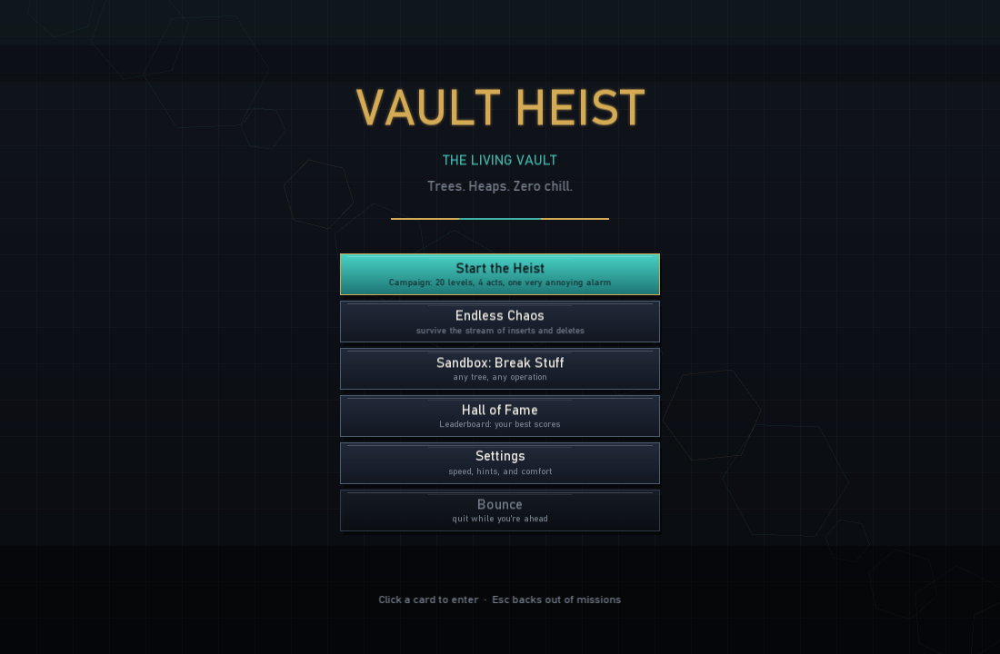
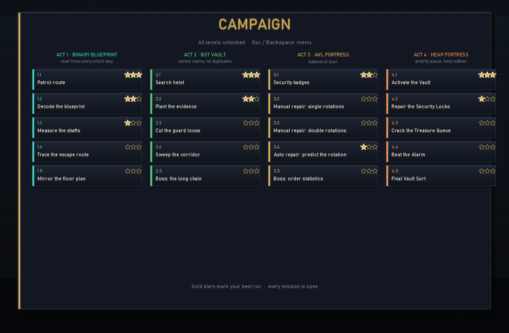
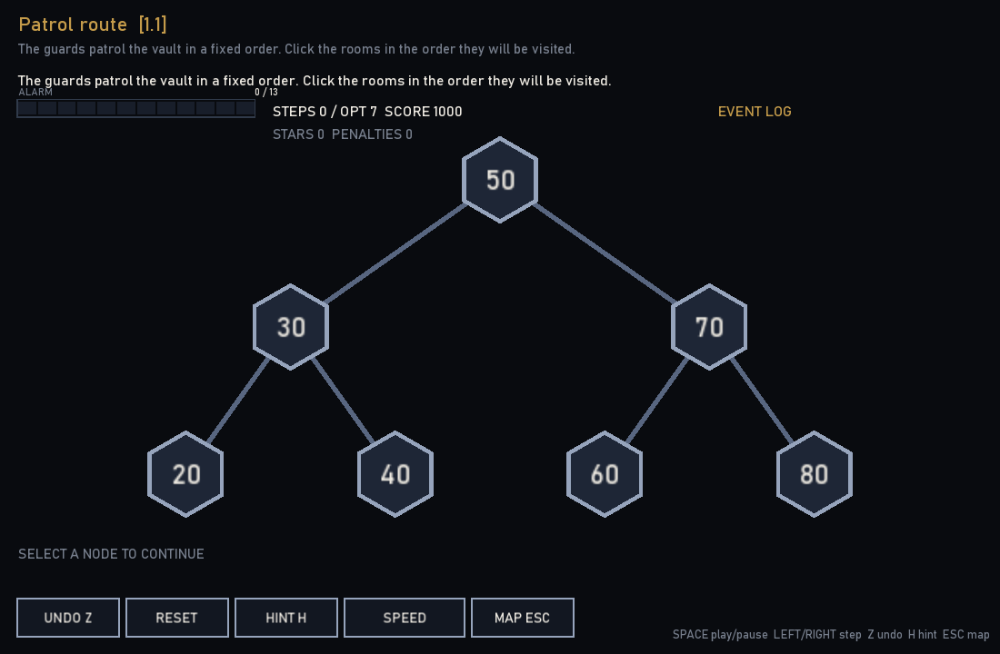
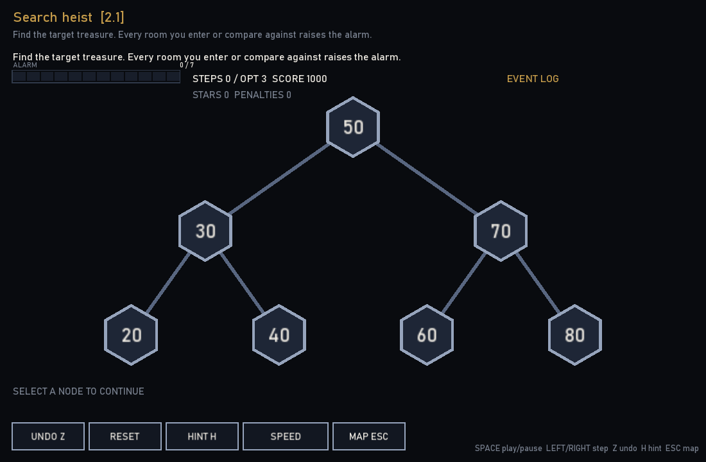
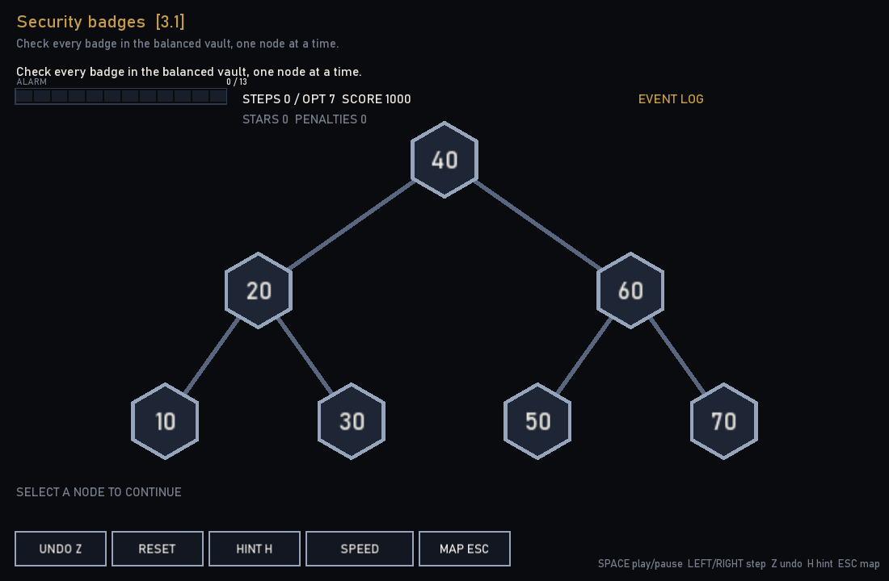
Each pair shows the unbalanced tree that needs the case, then the
rebalanced tree after the rotation(s). Before frames use the BST
shape (no rebalance) so the imbalance is visible; after frames are the AVL result.
Zero-balance heavy children use the single-rotation deletion rule
(>= 0 / <= 0).
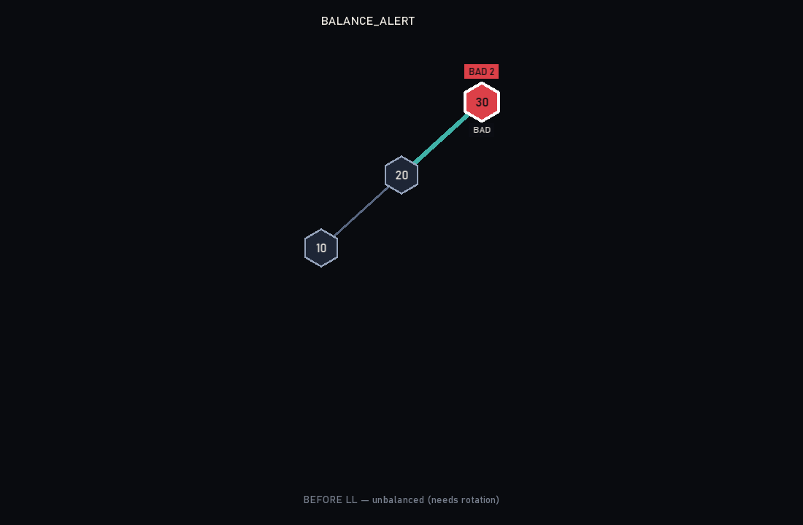
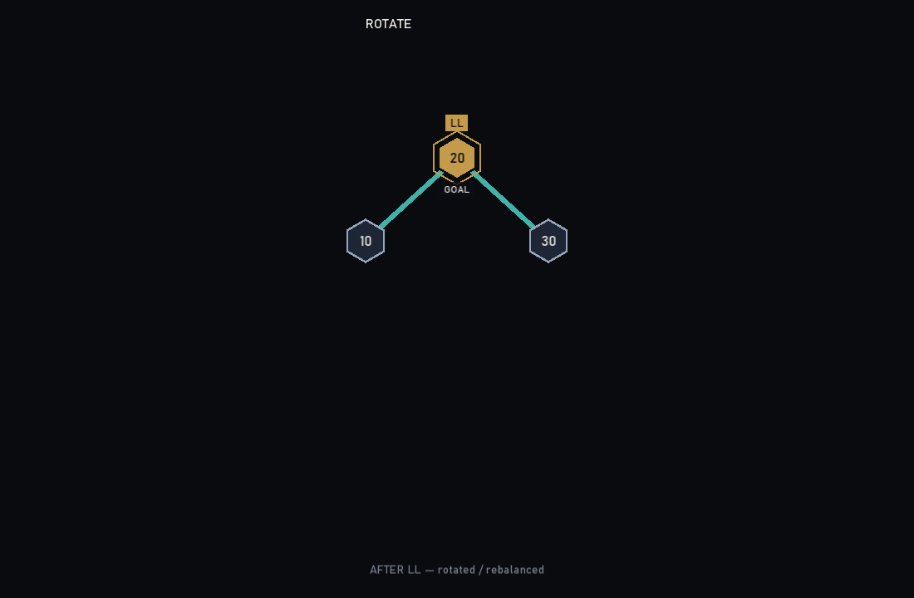

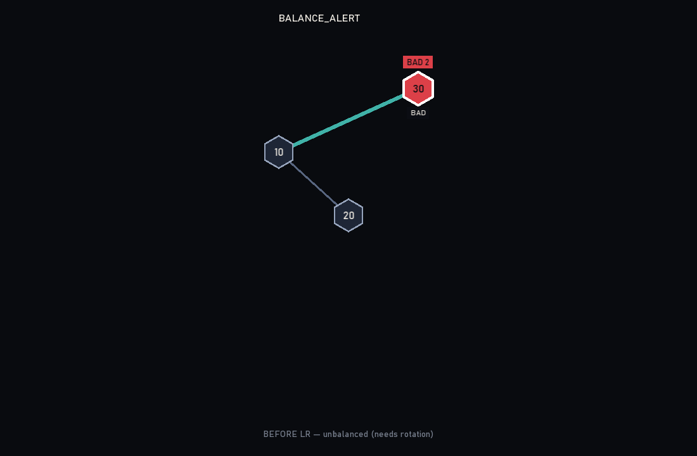
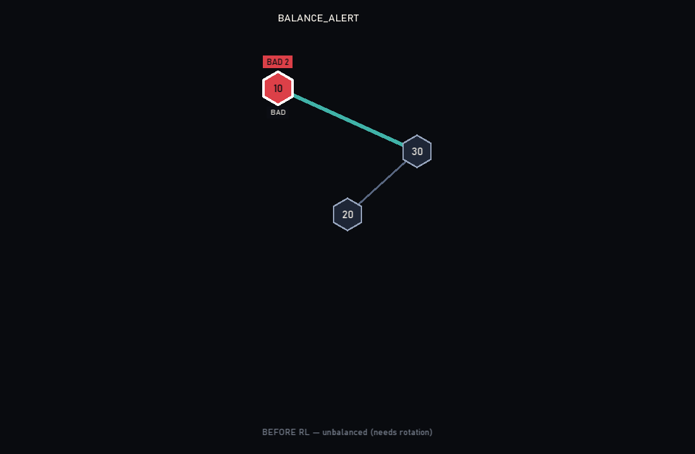
In Act 4 the player (1) builds or repairs a Max Heap, (2) extracts the maximum by
selecting root and last active then confirming the seal into the
sorted region, (3) restores the heap with manual parent–child swaps,
and (4) repeats until sorted (Heap Sort finale) or the race quota is met.
Figures below are from the synchronised heap tree + array view (HeapView).
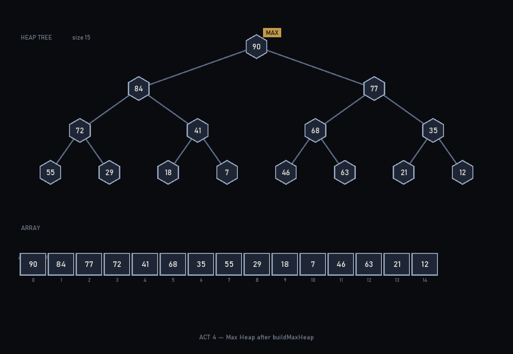
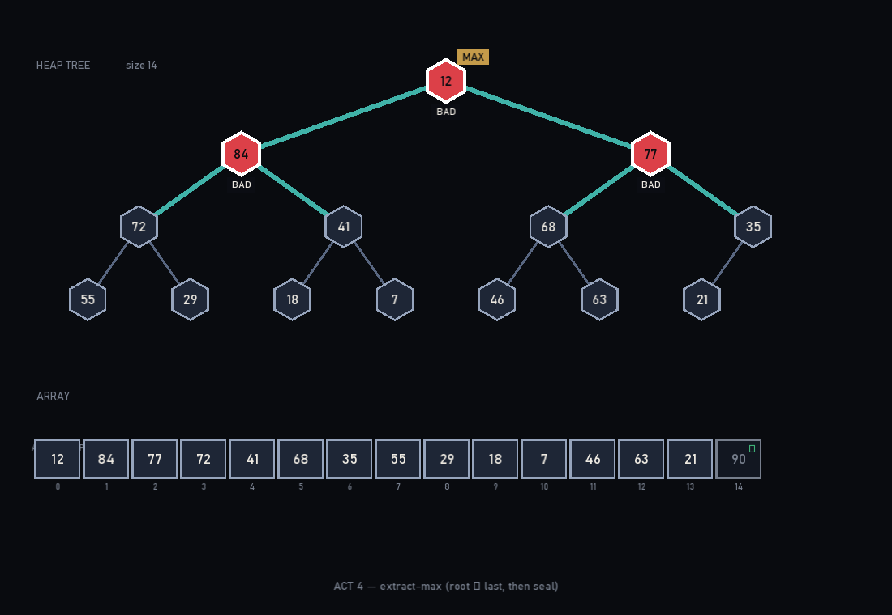
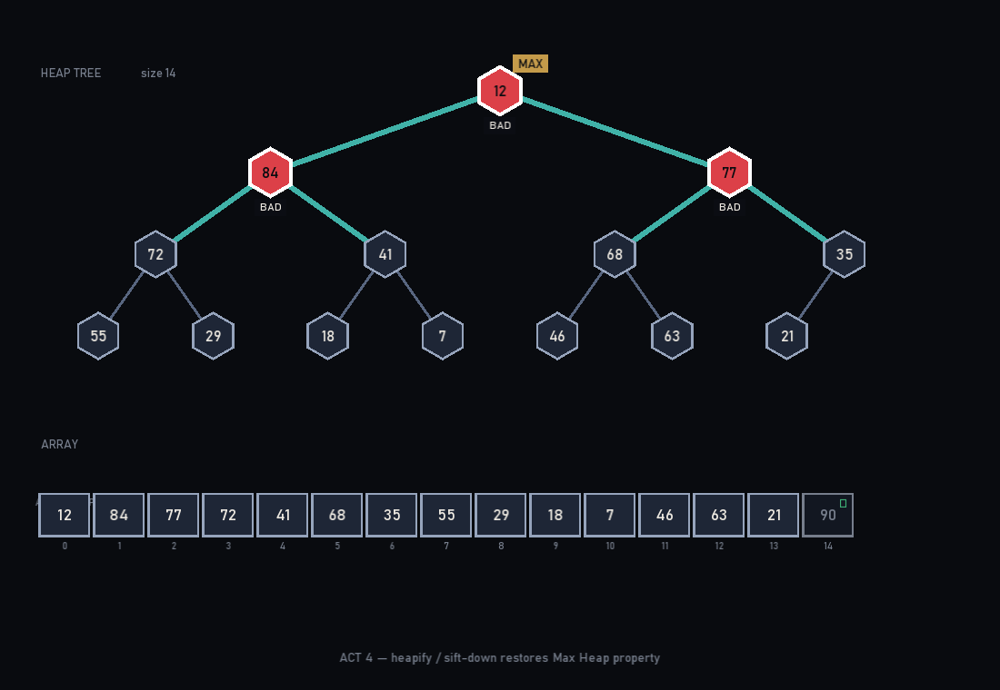
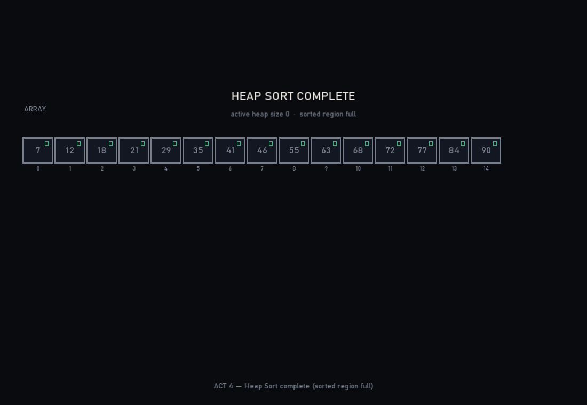
cmake --build build --target bench .\build\bin\bench.exe
Results in bench/results/. Recording off; fixed seeds; no std::sort.
| n | BST sorted | AVL sorted | BST random | AVL random |
|---|---|---|---|---|
| 100 | 100 | 7 | 14 | 8 |
| 1,000 | 1,000 | 10 | 21 | 12 |
| 10,000 | 10,000 | 14 | 32 | 16 |
Sorted BST becomes a chain (height ≈ n). AVL stays near log₂ n on the same keys (e.g. height 14 at n = 10,000 after 9,986 insert rotations).
| n | BST avg comparisons | AVL avg comparisons |
|---|---|---|
| 100 | 6.53 | 5.82 |
| 1,000 | 13.46 | 9.26 |
| 10,000 | 17.04 | 12.61 |
Sorted inserts ~0.99 rotations/key; random ~0.67. Worst single delete in these runs: up to 6 primitive rotations (random, n = 10,000).
| n | AVL kth (µs) | BST inorder scan (µs) |
|---|---|---|
| 100 | 125 | 3,897 |
| 1,000 | 196 | 36,301 |
| 10,000 | 208 | 539,485 |
AVL kth is ~log n via subtree sizes; the BST scan is ~n per query.
buildMaxHeap comparisons grow roughly linearly (random n = 10,000 → 19,329).
At n = 2,000: Heap Sort ~993 µs vs insertion ~10.4 ms vs selection ~15.9 ms
(Heap Sort extra space 0).
tests.exe: 663 PASS, 0 FAIL for the run used in this report
(tests/TEST_REPORT.md). Coverage includes BinaryTree/BST/AVL, validators,
layout/motion, Acts 1–4 scripted clears and penalties, snapshots, and Endless.
cmake -S . -B build cmake --build build -j 4 .\build\bin\vaultheist.exe .\build\bin\tests.exe .\build\bin\bench.exe
Run from the repository root. Controls: see README.md.
Levels: data/levels/*.json; adding levels: docs/level-guide.md.
We delivered a playable Vault Heist campaign on from-scratch trees and heaps, with an event-driven GUI, undo/replay, Endless mode, persistence and a reproducible Section 10 benchmark suite. The model stays free of SFML so the same structures are covered by hundreds of unit checks. Benchmarks confirm the campaign lesson: balance and subtree sizes matter in practice, and Heap Sort scales better than simple quadratic sorts.
Both members contributed and can explain the full system in viva.
Arslan: animation controller, Act 4 heap UI/logic integration, vault chrome hosting,
Endless/leaderboard polish, benches/report.
Anas: Acts 1–3 LevelPlay logic, tree animation view, campaign/menu visual pass on
develop.